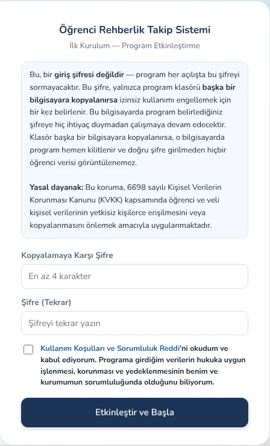

Ücretsiz indir
Programı indirin
Program ücretsizdir; indirmek için kayıt ya da e-posta gerekmez. Lütfen önce kullanım koşullarını okuyun.
Kendi sürümünüzü programda Ayarlar → Hakkında bölümünde görebilirsiniz. Yeniliklere Sürüm Notları'ndan bakın.
Kullanım Koşulları
Öğrenci Rehberlik Takip Sistemi · Koşul sürümü 1.1 · Yürürlük: 20.10.2026
Kısaca: Bu program ücretsizdir ve "olduğu gibi" sunulur. Girdiğiniz bütün bilgiler yalnızca sizin bilgisayarınızda tutulur; geliştiriciye veya başka birine gönderilmez. Verilerin hukuka uygun işlenmesi, korunması ve yedeklenmesi kullanıcının ve bağlı olduğu kurumun sorumluluğundadır. Programı kurmanız veya kullanmanız bu koşulları kabul ettiğiniz anlamına gelir.
1. Tanımlar ve kabul
Program: "Öğrenci Rehberlik Takip Sistemi" yazılımı ve onunla birlikte dağıtılan tüm dosyalar. Geliştirici: Programı hazırlayan ve yayımlayan kişi. Kullanıcı: Programı indiren, kuran veya kullanan gerçek ya da tüzel kişi (rehber öğretmen, okul, kurum).
Programı indiren, kuran veya kullanan herkes bu koşulları okumuş, anlamış ve kabul etmiş sayılır. Koşulları kabul etmiyorsanız programı kurmayınız ve kullanmayınız.
2. Kullanım izni
- Program, kişisel ve kurumsal kullanım için ücretsiz olarak, süresiz ve devredilemez bir kullanım izniyle sunulur.
- Programın veya bir bölümünün satılması, ücret karşılığı dağıtılması, kiraya verilmesi ya da değiştirilerek kendi ürünü gibi sunulması yasaktır.
- Program üzerindeki telif, ad ve bu koşullara ait bildirimler kaldırılamaz veya değiştirilemez.
- Programın tüm fikrî hakları Geliştiriciye aittir. Bu izin, Kullanıcıya program üzerinde kullanım dışında hiçbir hak vermez.
3. "Olduğu gibi" sunum — garanti verilmemesi
Program, herhangi bir açık veya örtülü garanti olmaksızın "olduğu gibi" ve "mevcut haliyle" sunulur. Geliştirici; programın hatasız, kesintisiz veya güvenli çalışacağını, belirli bir amaca uygun olduğunu, ürettiği hesaplama, rapor ve çıktıların doğru veya eksiksiz olacağını, resmî form, mevzuat ve yönetmeliklerdeki güncel değişikliklere uygun olduğunu garanti etmez.
4. Kişisel veriler ve KVKK
- Program bir masaüstü (yerel) uygulamadır. Girilen öğrenci, veli, görüşme ve diğer bütün bilgiler yalnızca programın kurulu olduğu bilgisayarda saklanır. Program bu bilgileri Geliştiriciye veya herhangi bir üçüncü kişiye göndermez; Geliştiricinin bu verilere erişimi yoktur.
- Bu nedenle Geliştirici, 6698 sayılı Kişisel Verilerin Korunması Kanunu (KVKK) kapsamında programa girilen veriler bakımından veri sorumlusu veya veri işleyen değildir. Veri sorumlusu, verileri işleyen Kullanıcı ve/veya bağlı olduğu kurumdur.
- Kişisel verilerin hukuka uygun olarak toplanması ve işlenmesi; ilgili kişilerin aydınlatılması, gerektiğinde açık rıza alınması, verilerin saklanması, süresi dolanların imha edilmesi ve gerekli teknik ve idari güvenlik tedbirlerinin alınması (bilgisayar şifresi, programın kopyalamaya karşı şifresi, yetkisiz kişilerin erişiminin engellenmesi vb.) tamamen Kullanıcının ve bağlı olduğu kurumun sorumluluğundadır.
- Programdan alınan çıktıların, yedek dosyalarının ve "okul raporu paketlerinin" kimlerle, hangi yolla (e-posta, mesajlaşma uygulaması, taşınabilir bellek vb.) paylaşıldığı Kullanıcının sorumluluğundadır.
5. Yedekleme ve veri kaybı
Programda otomatik yedekleme özelliği bulunsa da bilgisayar arızası, disk bozulması, virüs, yanlış silme, işletim sistemi veya bulut eşitleme (OneDrive vb.) sorunları gibi nedenlerle veri kaybı yaşanabilir. Verilerin düzenli olarak bilgisayar dışında bir ortama yedeklenmesi Kullanıcının sorumluluğundadır. Geliştirici, herhangi bir nedenle oluşan veri kaybından veya verilerin bozulmasından sorumlu tutulamaz.
6. Mesleki sorumluluk ve resmî kayıtlar
- Program yalnızca kayıt tutmaya ve raporlamaya yardımcı bir araçtır. Rehberlik ve psikolojik danışma hizmetlerine ilişkin bütün mesleki değerlendirme ve kararlar, Kullanıcının kendi mesleki sorumluluğundadır.
- Program, Millî Eğitim Bakanlığı'nın veya herhangi bir kamu kurumunun resmî yazılımı değildir; bu kurumlarla bir bağlantısı yoktur ve onlar tarafından onaylanmamıştır. Programdaki form düzenleri kullanım kolaylığı amacıyla hazırlanmıştır.
- Mevzuat gereği tutulması zorunlu resmî kayıtların ilgili resmî sistemlere ve usule uygun şekilde girilmesi ve programdan alınan çıktıların doğruluğunun kontrolü Kullanıcının sorumluluğundadır.
7. Sorumluluğun sınırlandırılması
Yürürlükteki mevzuatın izin verdiği en geniş ölçüde Geliştirici; programın kurulması, kullanılması veya kullanılamamasından, programdaki hata veya eksikliklerden, programla üretilen çıktılardan ve programa girilen verilerin işlenmesinden kaynaklanan doğrudan veya dolaylı hiçbir zarardan (veri kaybı, gelir veya kâr kaybı, iş kaybı, üçüncü kişilerin talepleri, idari para cezaları, disiplin işlemleri ve benzerleri dâhil) sorumlu değildir. Program ücretsiz sunulduğundan, her durumda Geliştiricinin sorumluluğu Kullanıcının program için ödediği bedelle (sıfır) sınırlıdır.
Bu madde, 6098 sayılı Türk Borçlar Kanunu başta olmak üzere sözleşmeyle kaldırılması veya sınırlandırılması mümkün olmayan emredici hükümler saklı kalmak kaydıyla uygulanır.
8. Kullanıcının taahhütleri
Kullanıcı; programı hukuka ve mesleki etik kurallarına uygun kullanacağını, programa yalnızca işlemeye yetkili olduğu verileri gireceğini ve programı kendi kusuru veya hukuka aykırı kullanımı nedeniyle Geliştiriciye yöneltilebilecek taleplerden doğacak zararları üstleneceğini kabul eder.
9. Güncellemeler, destek ve geliştirme
- Geliştirici güncelleme, hata düzeltmesi veya destek sağlamakla yükümlü değildir; programın yayımını ve dağıtımını dilediği zaman durdurabilir.
- Güncellemeler, hata düzeltmeleri ve önemli duyurular yalnızca Geliştiricinin web sitesinde (rehberliktakip.com) yayımlanır. Bu duyuruları takip etmek, programın güncel sürümünü kullanmak ve güncellemeleri zamanında yüklemek Kullanıcının sorumluluğundadır. Güncel olmayan sürümün kullanılmasından doğan sonuçlardan Geliştirici sorumlu değildir.
- Yeni özellik, kuruma özel uyarlama veya özel destek talepleri, taraflar arasında ayrıca yapılacak yazılı anlaşma ile ücretli olarak karşılanabilir. Bu tür anlaşmalar bu koşulları değiştirmez; yalnızca kendi kapsamındaki hizmetler için geçerlidir.
10. Üçüncü taraf bileşenler
Program; PDF okuma için pypdf kütüphanesini (BSD lisansı) ve Nunito / Nunito Sans yazı tiplerini (SIL Open Font License 1.1) içerir; Windows paketi ayrıca Python çalışma ortamını (Python Software Foundation lisansı) içerir. Bu bileşenler kendi lisans koşullarına tabidir ve lisans metinleri program klasöründe yer alır.
11. Koşullarda değişiklik
Geliştirici bu koşulları değiştirebilir. Değiştirilmiş koşullar programın yeni sürümüyle veya Geliştiricinin web sitesinde (rehberliktakip.com) yayımlanmasıyla yürürlüğe girer. Program, koşullar değiştiğinde açılışta yeniden onay ister; yeni koşulları kabul etmeyen Kullanıcı programı kullanmayı bırakmalıdır.
12. Uygulanacak hukuk
Bu koşullar Türkiye Cumhuriyeti hukukuna tabidir. Bu koşulların herhangi bir hükmünün geçersiz sayılması diğer hükümlerin geçerliliğini etkilemez.
↓ Onay kutuları, metni sonuna kadar okuyunca açılır.
~12,5 MB · Python içinde hazır gelir, ayrıca bir şey kurmanız gerekmez. Windows 10 / 11 (64 bit).
~1,3 MB
Mac'te Python bir kez kurulur. Kurulum adımı aşağıda.
İndirme başladı 🎉
Aşağıdaki kurulum adımlarını izleyin. İndirme başlamadıysa buraya tıklayın.
Kurulum
Adım adım kurun
Turuncu numaralar nereye tıklayacağınızı gösterir.
Zip'i ayıklayın
İndirilenler klasöründe Ogrenci-Rehberlik-Takip-x-Windows.zip dosyasına sağ tıklayın ve Tümünü ayıkla…'yı seçin.
Yeri seçip ayıklayın
Açılan pencerede yolu C:\OgrenciRehberlikTakip yapın (OneDrive dışında bir yer), sonra Ayıkla'ya basın.
Bir hedef seçin ve dosyaları ayıklayın
Dosyalar bu klasöre ayıklanacak:
☑ Bittiğinde ayıklanan dosyaları göster
Baslat.bat'a çift tıklayın
Açılan Ogrenci-Rehberlik-Takip klasöründe Baslat.bat dosyasına çift tıklayın. Python paketin içinde hazır gelir, ayrıca bir şey kurmanız gerekmez.
Uyarı çıkarsa: Yine de çalıştır
"Windows bilgisayarınızı korudu" penceresi çıkarsa önce Ek bilgi'ye, sonra Yine de çalıştır'a basın. İnternetten indirilen dosyalarda yalnızca ilk seferde çıkar.
Windows bilgisayarınızı korudu
Microsoft Defender SmartScreen tanınmayan bir uygulamanın başlatılmasını engelledi.
Ek bilgi1
Uygulama: Baslat.bat
Yayımcı: Bilinmeyen yayımcı
Siyah pencereyi açık bırakın
Bir siyah pencere açılır ve program tarayıcınızda kendiliğinden gelir. Bu pencereyi kapatmayın; kapatınca program durur. Masaüstüne de bir kısayol eklenir, sonraki açılışlarda onu kullanın.
==============================================
ÖĞRENCİ REHBERLİK TAKİP SİSTEMİ (sürüm x)
==============================================
Adres : http://localhost:8090/
Bu pencereyi KAPATMAYIN. Programı kapatmak
için bu pencereyi kapatın.!
Etkinleştirin
İlk açılışta bir kopyalamaya karşı şifre belirleyin (iki kez), Kullanım Koşulları kutusunu işaretleyin ve Etkinleştir ve Başla'ya basın. Bu bir giriş şifresi değildir, her açılışta sorulmaz; bir yere not edin.

12332 bit Windows ya da Windows 7/8 kullanıyorsanız önce python.org'dan Python kurun ve kurulumda Add python.exe to PATH kutusunu işaretleyin.
Zip'i açın
İndirilenler klasöründe Ogrenci-Rehberlik-Takip-x-Mac.zip dosyasına çift tıklayın; yanında Ogrenci-Rehberlik-Takip klasörü oluşur.
Takip-x-Mac.zip1
Takip
Klasörü Belgeler'e taşıyın
Ogrenci-Rehberlik-Takip klasörünü sürükleyip kenar çubuğundaki Belgeler'e bırakın. İndirilenler'de bırakmayın; o klasör zamanla temizlenebilir.
Takip
Baslat.command'a sağ tıklayıp Aç deyin
Klasördeki Baslat.command dosyasına sağ tıklayın (ya da Control tuşuyla tıklayın) ve Aç'ı seçin.
Uyarıda tekrar Aç
"Geliştirici doğrulanamadı" uyarısında Aç'a basın; yalnızca ilk seferde sorulur.
"Baslat.command" açılsın mı?
macOS, bu uygulamanın geliştiricisini doğrulayamıyor. Açmak istediğinizden emin misiniz?
Python'u bir kez kurun
Mac'te Python bir kez kurulur. "Komut satırı geliştirici araçları" penceresi çıkarsa Yükle'ye basın; kurulum bitince Baslat.command'a tekrar çift tıklayın. Pencere çıkmazsa python.org/downloads'tan Mac için Python'u kurun.
"python3" komutu, komut satırı geliştirici araçlarını gerektirir.
Araçları şimdi yüklemek istiyor musunuz?
Terminal penceresini açık bırakın
Bir Terminal penceresi açılır ve program tarayıcınızda kendiliğinden gelir. Bu pencereyi kapatmayın; kapatınca program durur.
ÖĞRENCİ REHBERLİK TAKİP SİSTEMİ (sürüm x)
Adres : http://localhost:8090/
Bu pencereyi KAPATMAYIN.!
Etkinleştirin
İlk açılışta bir kopyalamaya karşı şifre belirleyin (iki kez), Kullanım Koşulları kutusunu işaretleyin ve Etkinleştir ve Başla'ya basın. Bu bir giriş şifresi değildir; bir yere not edin.
Pencere görüntüleri temsilîdir; Windows ve macOS sürümüne göre biraz farklı görünebilir.
Güncellemeler
Güncellemeler ve hata düzeltmeleri yalnızca Sürüm Notları sayfasında duyurulur. Yeni sürüme geçmek için yeni zip'teki uygulama klasörünü (Windows'ta python klasörünü ve Baslat.bat'ı da) eski klasördekilerin yerine koyun; veri klasörünüze dokunmayın. Önce Ayarlar → Yedekler → Şimdi Yedekle deyin.
Haberdar olun
İsterseniz yeni sürüm duyuruları için e-posta listesine katılabilirsiniz. Gönüllüdür; indirmeyle bir bağlantısı yoktur.